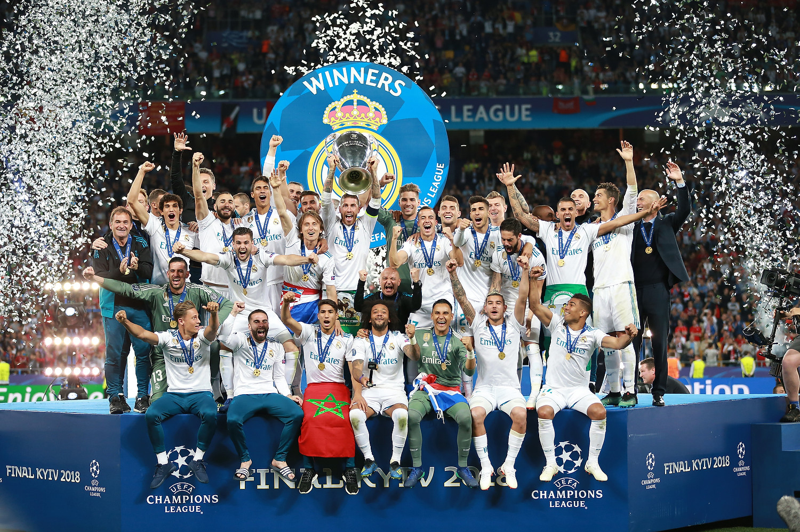

The competition was founded as the FA Premier League on 20 February 1992 following the decision of clubs in the Football League First Division to break away from the Football League, founded in 1888, and take advantage of a lucrative television rights sale to Sky.From 2019 to 2020, the league's accumulated television rights deals were worth around £3.1 billion a year, with Sky and BT Group securing the domestic rights to broadcast 128 and 32 games respectively. The Premier League is a corporation where chief executive Richard Masters is responsible for its management, whilst the member clubs act as shareholders. Clubs were apportioned central payment revenues of £2.4 billion in 2016–17, with a further £343 million in solidarity payments to English Football League (EFL) clubs.
The Premier League is the most-watched sports league in the world, broadcast in 212 territories to 643 million homes and a potential TV audience of 4.7 billion people.For the 2018–19 season, the average Premier League match attendance was at 38,181, second to the German Bundesliga's while aggregated attendance across all matches is the highest of any association football league at 14,508,981.Most stadium occupancies are near capacity. The Premier League ranks first in the UEFA coefficients of leagues based on performances in European competitions over the past five seasons as of 2021. The English top-flight has produced the second-highest number of UEFA Champions League/European Cup titles, with five English clubs having won fourteen European trophies in total.
Premier League


